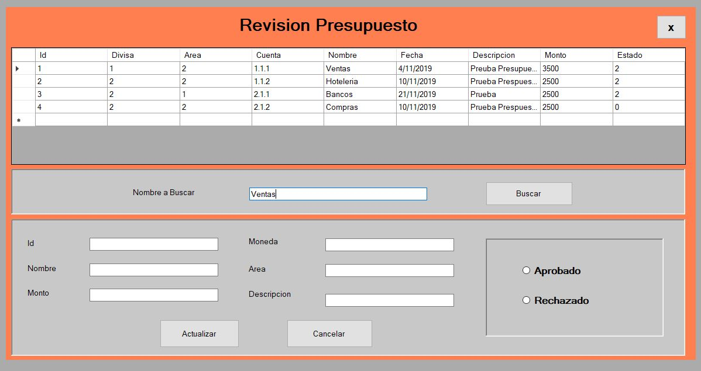

Revision Presupuesto
1.Al ingresar al Formulario revision presupuesto:
2. Se pueden visualizar todos los presupuestos creados anteriomente, al poder ver todos los presupuestos, se ingresa el nombre del presupuesto en el buscador para autorizarlo o rechazarlo.

3. Al ingresar el nombre y darl click buscar se llenaran todos los campos con los datos del presupuesto buscado.
4. Al revisar todos los datos se selecciona la opcion de aprobado o rechazo.